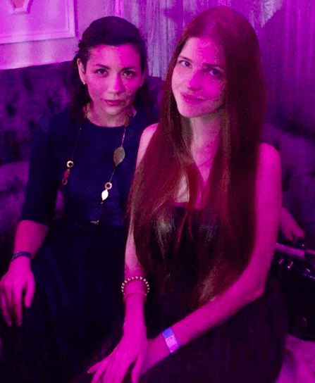
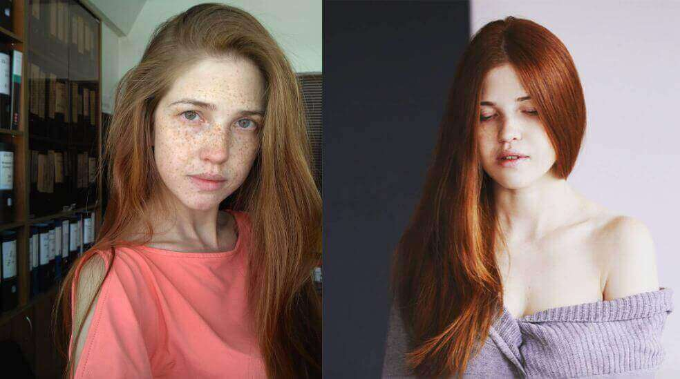
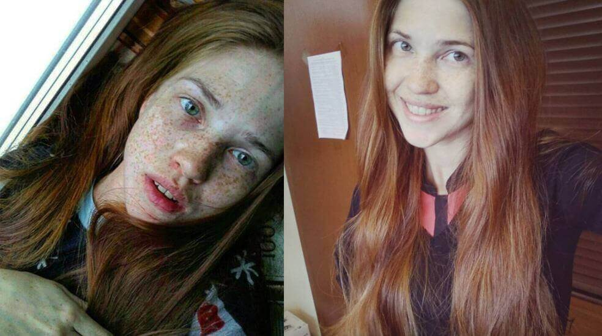
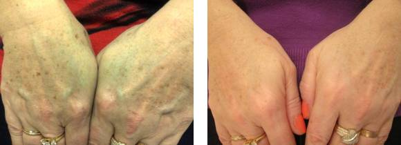
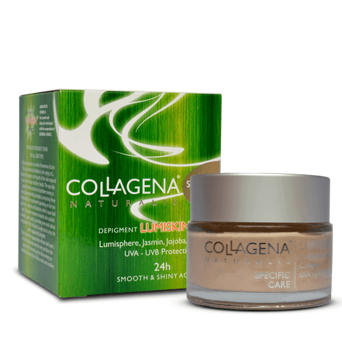
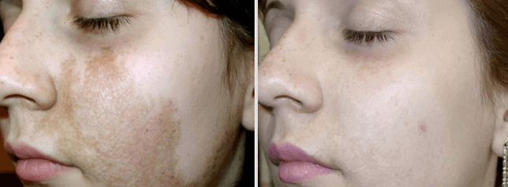
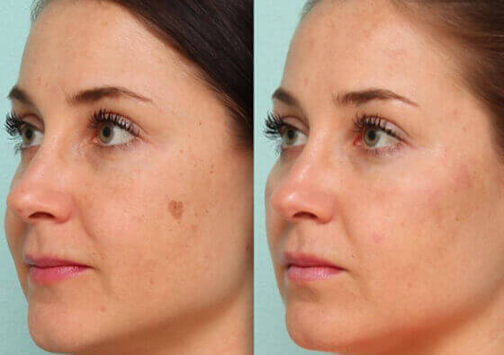
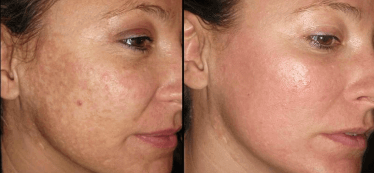
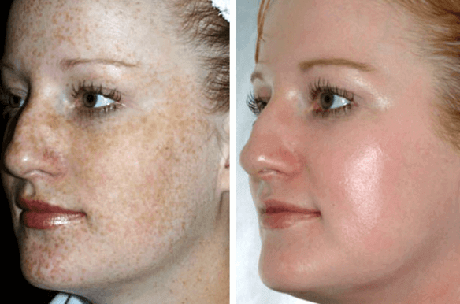

De când mă știu mi-am apărut pete ușor. De la natură primeam pete de la soare și niciodată nu s-a sfiit să-mi dea cât mai multe. Am mers la școală, apoi la facultate, muncă, puneam poze pe Instagram și aveam impresia că viața e frumoasă. Și totul a fost în regulă până când am început să înțeleg oribilul adevăr despre mine însămi.
Săptămâna aceea fusese foarte grea la lucru, terminasem un proiect mare. Nu mai aveam timp, totul se mișca prea repede, dar în ultimul moment, am reușit să rezolvăm totul. Am decis să sărbătorim asta – după toată munca, am ieșit la un bar cu toții. Mai mult chiar, luni trebuia să plec într-o vacanță pe care o plănuisem – un alt motiv pentru care aveam dreptul să mă bucur de un pahar de vin.
Unul dintre colegii mei băuse prea mult și începuse să se comporte indecent. Am încercat să o conving să se oprească și să nu mai danseze pe bar, știind foarte bine că se va simți foarte prost după ce se va trezi, dar ea nu și nu.
Încercările mele de a o convinge nu au mers. Am luat-o de mână și am încercat să o trag jos de pe bar, dar ea s-a prefăcut a fi dezgustată și a țipat la mine: „pleacă de aici monstrule, o să sperii toți băieții!”
Sincer, nu mă așteptam la asta. Toți cei din companie au auzit. M-am simțit foarte prost și sincer, nu înțelegeam de ce spusese asta. „Bine”, a zis fata care lucra ca și contabilă, încercând să clarifice situația. „Mash, nu ar trebui să te superi pe ea. Toți avem defecte. Ale tale le vedem cu toții clar. Dar chiar și cei handicapați ajung să se căsătorească, așa că sunt sigură că vei găsi și tu pe cineva care să te iubească.
Nu eram pregătită pentru asta. Da, nu arăt ca toți oamenii, dar era ăsta un motiv să mă insulte? . Deci oameni ăștie erau mereu drăguți și îm zâmbeau, dar pe la spate mă bârfeau și râdeau de pistruii mei.
Furia mi-a acaparat corpul, lacrimile îmi curgeau pe obraji... Am fugit din bar și am plâns până acasă. Cuvintele alea m-au rănit mai mult decât oricare altele. Cum voi mai merge la lucru? Cum îi voi mai privi pe oamenii ăștie în ochi? Cum mă voi mai uita la mine în oglindă?...
Mi-am dat seama că am fost înconjurată de trădători și că am fost înșelată. Timp de două zile am plâns de furie și de disperare. Apoi deodată, mi-am dat seama de ceva și am decis că nu voi mai lăsa pe nimeni să râdă de mine, niciodată. Îndepărtarea pistruilor ar trebui să fie mai ușor decât să slăbești 10 kg. Deci, să vedem cine va câștiga!
Dar a fost mult mai greu decât mi-am imaginat...
Apropo, aveam doar 2 săptămâni de vacanță la dispoziție pentru a scăpa de pistrui. Mi-am setat un obiectiv și mi-am zis că orice s-ar întâmpla, voi continua să lucrez alături de ei. Colegii mei vor fi uluiți!
După ce am citit zeci de articole despre albirea pielii, am făcut o listă cu tot felul de produse și tehnici pe care voiam să le încerc – tot feluld e măști și creme făcute acasă. Suc de lămâie, pătrunjel, lapte, ovăz ... încercasem practic toate tipurile de măști posibile ... toate au fost la fel de inutile – nu am pierdut nici măcar un pistrui.
Așadar, a trebuit să recurg la măsuri drastice. Am luat bani din contul meu de economii, unde strângeam bani ca să îmi iau o mașină și am mers la spital ca să îndepărtez pistruii cu laserul. Părea că nici costul procedurii, care costa cât jumătate din salaariul meu anual nu putea să-mi schimbe intenția, dar apoi am văzut-o…
În holul clinicii, am întâlnit o fată a cărei față era pe jumătate pictată cu ceva ce se asemăna cu creta. Plângea, suspina. Spunea că încercase să își îndepărteze un mic semn din naștere de pe față. M-a asigurat că procedura va avea succes, că nu vor rămâne urme, dar că rămâne o pată albă, de cele mai multe ori. Trecuseră șase luni și nimic nu se schimbase.
Partea cea mai nasoală era că arăta mult mai rău decât pistruii și era practic imposibil de îndepărtat. Era atât de înspăimântător – aveam eu să am parte de același rezultat? Am ales să nu trec prin acea procedură.
Încercasem toate opțiunile posibile pentru a scăpa de „pupicii soarelui” și nici una nu funcționase. Mă simțeam foarte rău; Stăteam în mijlocul drumului și plângeam atât de tare, încât probabil că toată țara mă auzea. Apoi am mers să-mi vizitez mama.
Nu am vrut să o supăr cu eșecurile mele și intențiile mele de a-mi schimba înfățișarea, dar nu am mai putut să suport și am izbucnit – i-am povestit despre glumele de la lucru și despre încercările mele fără succes de a-mi schimba pielea. Mama a fost surprinsă pentru că era sigură că nu voi face schimbări dramatice în lookul meu.
După multe încercări fără succes de a mă convinge de cât de frumoasă sunt, mama mi-a zis: „din moment ce vrei să scapi de pistrui, ia Collagena Lumiskin de la mine. Crema asta m-a ajutat să scap de punctele negre".
Și într-adevăr, mama mea are doar 40 de ani, dar i-au apărut pe mâini mai multe pete și asta o enerva foarte tare deoarece îi aminteau că a îmbătrânit. Spre rușinea mea, nici nu observasem că petele dispăruseră.
Bineînțeles, am acceptat să îi încerc crema. Mai mult chiar, este ideală pentru față pentru că hidratează și hrănește pielea. Are numai ingrediente naturale, nu conține aditivi periculoși, parabeni și siliconi. Eu sunt predispusă alergiilor, așa că ingredientele contau foarte mult pentru mine.
Recenziile Collagena Lumiskin de la alți oameni au arătat că aceasta face față fără probleme albirii pielii. În plus, are un efect de lifting și face pielea mai luminoasă și mai catifelată. Experiența mamei mele a arătat și că are un efect anti-îmbătrânire, deoarece strânge pielea mai bine decât oricare alte tratamente de la saloanele de frumusețe.
Printre ingrediente vei găsi nu numai colagen, dar și ulei jojoba și iasomie, ceea ce înseamnă că această cremă ajută și la tonifiere, luptă împotriva acneei și protejează pielea împotriva razelor soarelui. Mulți au scris și că au folosit crema pentru a scăpa de urmele lăsate de coșuri și chiar că au folosit-o pentru a scăpa de acnee. Atât de multe lucruri bune am auzit de crema asta, încât am decis să o încerc. După ce cele 10 zile de vacanță s-au încheiat – era foarte important să am o față perfectă!
Pe site-ul lor oficial, de unde am comandat crema, scria că efectul dorit va apărea în decurs de 30 de zile și că trebuia să o folosesc dimineața și seara. Dar în loc de două ori pe zi, mă dădeam cu cremă o dată la două ore. Am crezut că asta mă va ajuta să obțin rezultate mai repede. Într-adevăr, în doar trei zile, majoritatea pistruilor mei au devenit mult mai mici.
După o săptămână, aproape că dispăruseră complet. Am decis să mai iau o pauză de câteva zile pentru a obține rezultatul complet. Și am reușit!
Pielea mea era incredibil de curată și de frumoasă. Nu mă mai săturam să mă uit în oglindă – atât de mult îmi plăcea noua mea imagine. Pentru că într-adevăr, cu pistrui, eram doar o fată obișnuită, dar acum – eram o prințesă!
Am început să fiu remarcată de tineri, prietenii îmi făceau complimente, rudele mă lăudau pentru curajul de trece prin transformarea asta. Mai rămăsese doar să văd cum vor reacționa coleii mei – atitudinea lor față de transformarea mea mă înspăimânta.
Dar, după cum aveam să aflu, mă temeam degeaba. Prima zi înapoi la birou a fost un succes. Maria, care spusese tuturor secretul meu, practic a rămas cu gura căscată când m-a văzut, iar cea pe care încercasem să o ajut la bar să nu se facă de râs fusese dată afară. Băieții cu care lucram au început să se uite la mine altfel. Trebuie să menționez că mi-a oferit mai multă încredere în mine decât alcoolul.
A fost un adevărat succes și m-am bucurat enorm. Niciodată nu m-am mai simțit atât de atrăgătoare și de frumoasă. Mulțumesc mamei mele care întotdeauna vine să mă ajute și îmi oferă sfaturi bune.
Imaginea mea cea nouă mi-a schimbat viața total în bine. Am mai multă încredere în mine, mi-am schimbat hainele, m-am îndrăgostit de mine. Sunt extraordinar de recunoscătoare celor care dezvoltă creme precum Collagen Lumiskin. Dacă aveți aceeași problemă – pistrui, pete pigmentate după naștere sau din cauza îmbătrânirii, vă recomand cu mare căldură crema asta. Dacă m-a ajutat pe mine, atunci poate să rezolve orice.
Mult noroc tuturor!
Comentarii
Mariana
Reușisem în trecut să-mi albesc pistruii. Mi-a părut foarte rău; arăta oribil – corpul bronzat și fața albă, o diferență de la cer la pământ.
Raluca
Collagen Lumiskin albește doar pigmentul, nu toată pielea, așa că nu vei întâmpina astfel de probleme.
Cristina
Raluca, ești sigură de informațiile astea?
Raluca
Cristina, da. Și eu și sora mea folosim crema asta, apoi au încercat-o prietenii ei – nu am avut plângeri. În cazul meu, petele mi-au dispărut fără probleme.

Irina
Am stat mai mult de o lună la mare, acolo nu poți să porți machiaj și m-am săturat să folosesc doar măști care albesc fața. O să încerc Lumiskin. Sper că o să funcționeze
Tatiana
spuneți-mi vă rog, există efecte secundare și dispar petele complet?
Elena
În legătură cu pistruii – nu știu, s-ar putea să apară din nou primăvara. Petele maro, care apar din cauza vârstei și nu de la soare dispar cu totul.
Diana
Am încercat să scap de ei cu laserul. Nu m-a ajutat. În primele 2-3 luni, pistruii par mai albi, dar apoi apar din nou, iar vara asta se văd și mai tare.
Ana
și eu am aceeași problemă, nici nu suport să mă uit în oglindă :(((
Georgiana
După ce am născut, mi-au apărut petele astea pe față. Am încercat măști și creme – fără rezultate. Acum folosesc Lumiskin și chiar se vede că are efect.

Valentina
dar pielea totuși, nu e afectată deloc? Întreb doar, prima dată avusesem pete negrei sub nas, ziceai ca am mustață :)))
Izabela
Leacurile băbești pot să îți afecteze pielea rău de tot. Crema asta e sigură. Eu una am piele foarte sensibilă, dar a fost albită perfect și chiar arată bine.

Ingrid
Aveam o față de ziceai că eram dependentă de heroina. Collagena Lumiskin m-a transformat. Totuși, i-a trebuit cam o lună să aibă efectul ăsta.

Lasă un comentariu